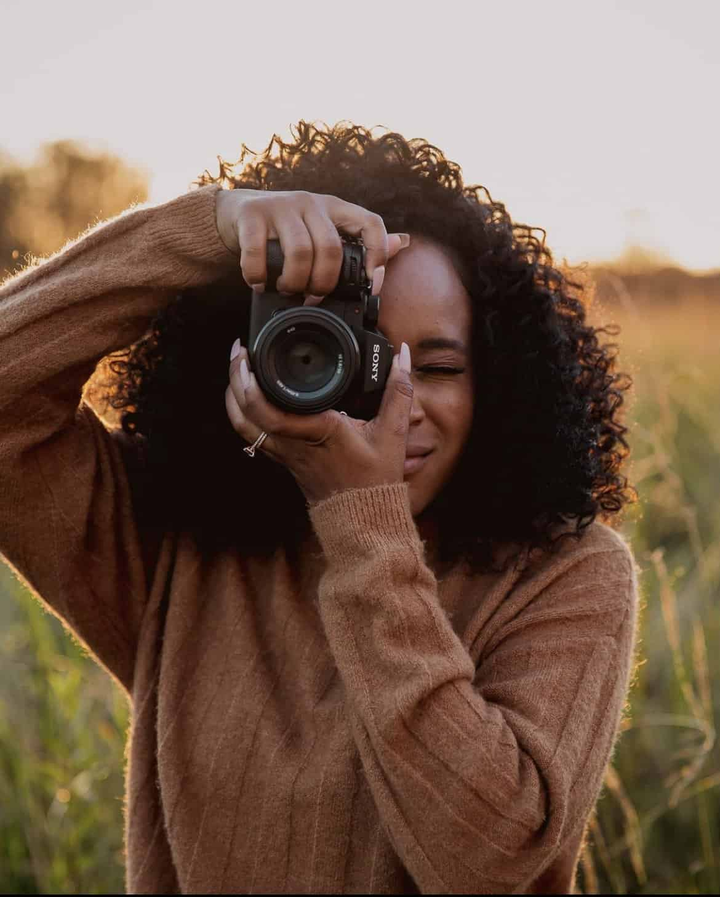

Photographer • Storyteller
Pretoria, South Africa
Hi, I'm Thandeka Molekwa
About Me
I've spent the last six years photographing people in the moments they usually forget to notice — a quiet laugh, a hand held a little tighter, the pause before someone says something true. My style is unposed and natural light-first, built around letting a session feel like a conversation rather than a shoot.
My Approach
I believe the best photographs aren't forced. My sessions are relaxed, natural and built around creating space for genuine moments to happen.
Behind the Lens
I love restoring old cameras and discovering the character that film brings to a photograph.
I'm drawn to soft, natural light and the atmosphere it creates in an image.
Whether it's a new street or a mountain trail, I'm always looking for somewhere inspiring to photograph.
Available in Pretoria and Beyond
Lets create something meaningful